First decision: what is worth archiving
Three things are worth archiving: reusable shots (brand, person, place), versions that may change (a client may return), and rights that must be proven (releases, likeness, music). One-off, no-reuse, no-rights footage should not take archive space.
Ask what the next person will do with it. If there is no answer, keep the delivery package and project, not every source clip.
Archive package: five parts, none optional
Project file, source/proxies, LUTs and fonts, rights and likeness, index and metadata. The project must open offline; source must relink; LUTs and fonts must restore the look; rights must prove use; the index must be searchable.
Name every file with project, date, scene, version. No “final,” “New Folder,” or “copy.” The index lists filename, scene, person, rights, expiry, location.
Restore test: the pass line for an archive
After archiving, pick one random shot, open the project on another machine, relink, apply the LUT, and export. If it will not open, relink, or match color, the archive is not done. Restore testing is part of archiving, not optional.
Log the test: date, machine, software version, missing files, fix. Read the last log before the next archive.
Archive package: project—media—LUT—rights—index

Reuse: rights before creative
Before reusing, check three things: scope (organic/paid/advertising), term, territory. An organic license does not cover paid media; a one-year license expires; mainland-only footage cannot go to overseas platforms.
Reuse is not cutting the old film into the new one; it is extracting reusable shots, sound, graphics, and templates. Build a reusable-asset index tagged by person, scene, action, and light.
Failure case: three years archived, all media offline
A brand project archived only the project and proxies; source stayed on an old drive. Three years later the client wanted a re-cut. The project opened, but every clip was offline, the old drive interface was gone, and proxies were too weak to grade. The only option was a re-shoot.
The fix is not a new drive; it is a restore test at archive time. A project opening does not mean media relinks; media relinking does not mean color restores.
Cost and acceptance
Low: one project archive, index, one restore test, ¥1,000–3,000. Mid: multi-project library, LTO/cloud archive, rights ledger, ¥3,000–15,000. High: department MAM, migration, long-term verification, ¥15,000–50,000+.
Image note. Covers, diagrams and step images on this page are editorial illustrations or structure diagrams, not photographs of a test performed here; they are not evidence of measured gear performance. Where an image is AI-assisted, the caption says so. Read the test conditions in the text before treating an image as proof.